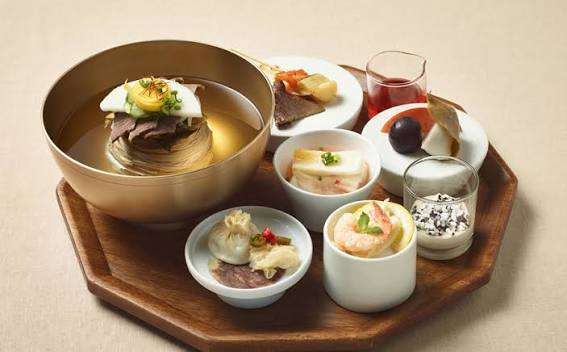

당신만 몰랐던 숨은맛집 #001 - 서관면옥
서관면옥은 전통적인 한국 음식을 맛볼수 있는곳입니다. 다이닝 리뷰어들이 극찬하기도 한 숨은 맛집입니다. 특히 이곳에서 판매하는 평양냉면은 전국적으로 유명하며, 많은 사람들이 이곳을 찿는 이유이기도 합니다.
⭐평점 : 4.8📍위치 : 서울특별시 서초구 서초대로 56길 11
맛집에 대한 맛집로드가 추천하는 전국 숨은 맛집 가이드
서관면옥은 전통적인 한국 음식을 맛볼수 있는곳입니다. 다이닝 리뷰어들이 극찬하기도 한 숨은 맛집입니다. 특히 이곳에서 판매하는 평양냉면은 전국적으로 유명하며, 많은 사람들이 이곳을 찿는 이유이기도 합니다.
⭐평점 : 4.8📍위치 : 서울특별시 서초구 서초대로 56길 11
이곳은 성수동 로컬 가성비 노포(오래된 가게)이며 특유에 맛집분위기를 풍기는 삼겹살 맛집입니다. 특히 이곳은 생삼겹살 품질이 뛰어나며, 된장찌개가 2000원이라는 메리트도 있는 가성비 맛집입니다.
⭐평점 : 4.5📍위치 : 서울특별시 성동구 성수동 1가 123
합정,상수 인근의 프리미엄 일식 돈카츠 전문점 츠키젠 입니다. 방문객들 사이에서는 평균 평점이 4.4~4.8점의 높은 평점을 기록하고 있으며 '일식카츠계의 에르메스'라는 별명으로 불리고 있는만큼 고급스러운 원육의 품질과 독특한 소스 구성에서 긍정적인 평가를 받고 있지습니다. 특히 시그니처인 상로스카츠는 한정수량인 만큼 방문시 꼭 맛보아야 하는 메뉴입니다.
⭐평점 :4.8📍위치 : 서울특별시 마포구 독막로8길 23
몽키가든은 인기 태국,베트남 음식을 필두로파는 음식점이며 한적한 시골마을에 자리잡은 이곳은 이국적이고 깔끔한 인테리어와 분위기가 매력적인 곳입니다. 특히 퍼보(소고기 쌀국수)는 육수 맛이 진하고 일반적인 면과 다른 특별한 식감을 느낄수 있어 만족도가 아주 높은 메뉴입니다. 그리고 분짜와 분보후에는 베트남 현지에서 먹는 맛과 비슷하다는 평가이며 고기 고명퀄리티가 우수하다는 평가를 많이 받고 있습니다.
⭐평점 : 4.4📍위치 : 경기도 양평군 서종면 황순원로 91-2